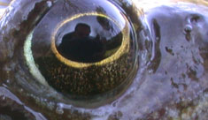

De Putten
zaterdag 15 maart 2003 | Updates
Eindelijk nog eens wat fotootjes! Helaas nog geen blauwborstjes te bespeuren vandaag. In het reservaat ‘De Putten’ in Melsen zag ik voor het eerst een koppeltje roodborsttapuit!

zaterdag 15 maart 2003 | Updates
Eindelijk nog eens wat fotootjes! Helaas nog geen blauwborstjes te bespeuren vandaag. In het reservaat ‘De Putten’ in Melsen zag ik voor het eerst een koppeltje roodborsttapuit!
